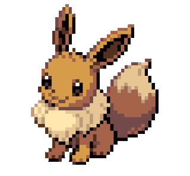

the start of this week was really rough. i don't want to make this entry another sob story because then every volume would just seem really depressing so in this volume, i want to talk about intimacy. i just finished this movie called "Chungking Express" dir. by Wong Kar-Wai (like i finished it literally 5 minutes ago) but while i was watching it, i felt this weird sense of intimacy and i don't mean intimacy that involes sexually attraction, but the intimacy of just being in someones presence. silently sitting with someone, comfortable enough where the silence isn't awkward. Leading into that, i wanted to make a list of things that i find to be truly intimate.
sharing headphones with someone. especially the wired ones. music can have such a big emotional effect on relationships and people. having to stay close together just so you can hear whatever song is playing. it creates a space for this innocent closeness with someone. it's almost like you're teathered to this person. one pull and all of that initmacy drifts away. a small act of love but it goes a long way (at least to me).
eye contact. okay this one is kinda a given but it needs its time to shine regardless. i love eye contact which is weird because im very awkward but somehow whenever i hold eye contact with someone, i feel like i have all of the control. i love the way it makes me feel. it fills me with butterflies. complete silence. just one looking into the other. the eyes are the windows to the soul or whatever they say.
remembering something that someone previously said. whether its your order from a coffee shop or a tv show that you said you liked. the simple act of leaving space in youd mind to remember something someone you loved likes is really special.

coming home after hanging out with someone and smelling like them. this is one of my favorites. the lasting scent of this person on your clothes. its a reminder of the moments you just shared. the connection you just made. i find this beautiful because one random day you could be walking down the street and suddenly you smell this person and so many memories come flashing forward.

oh, how i love being a hopeless romantic.
listen to my favorite song of the week!